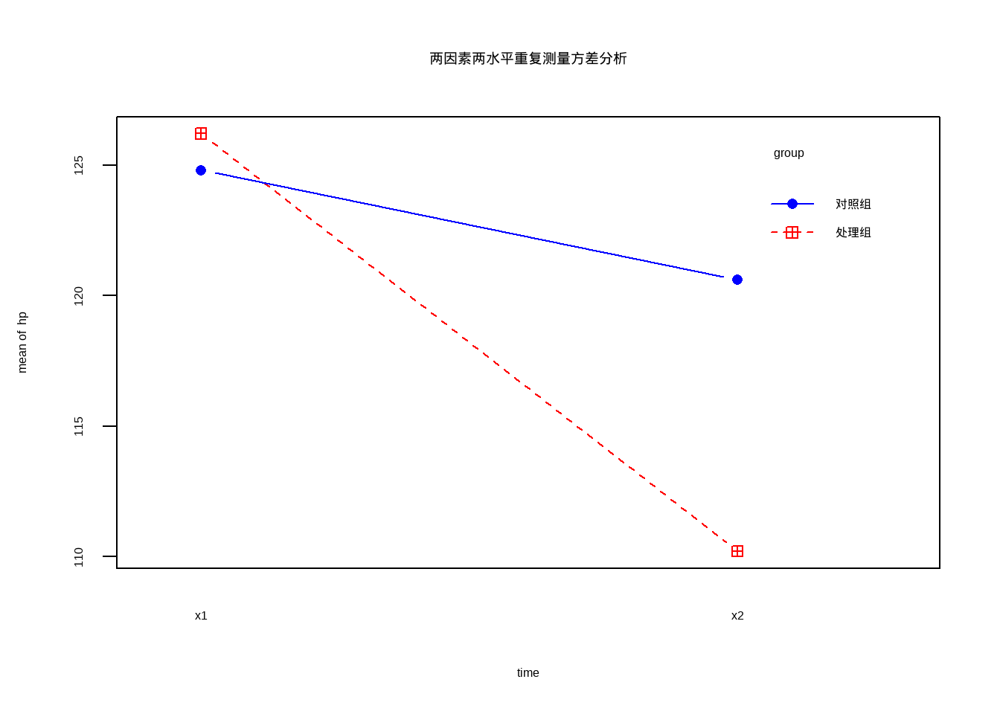
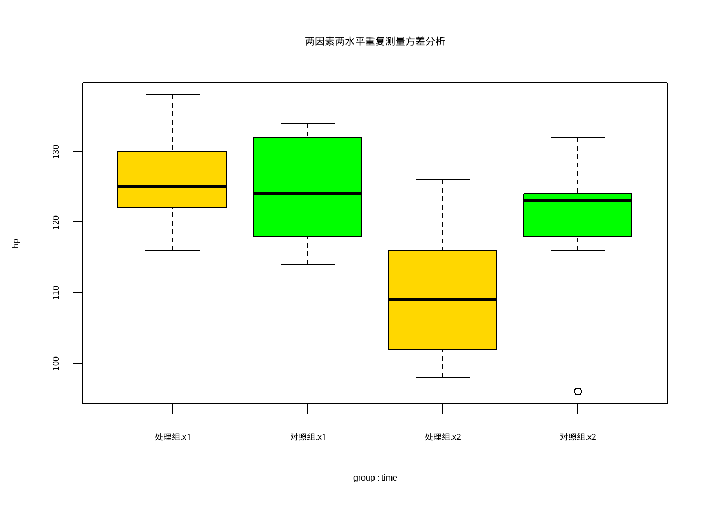
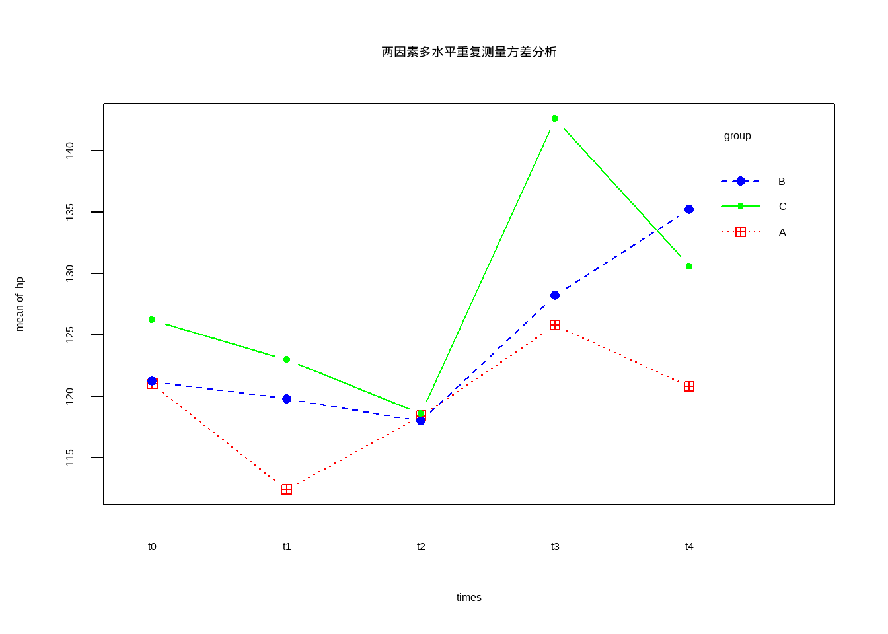
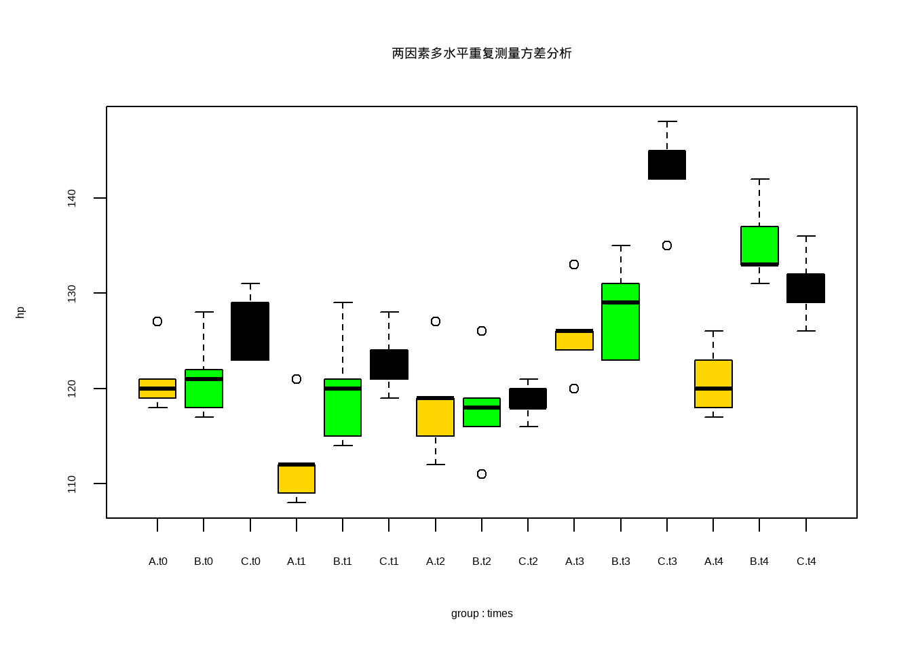
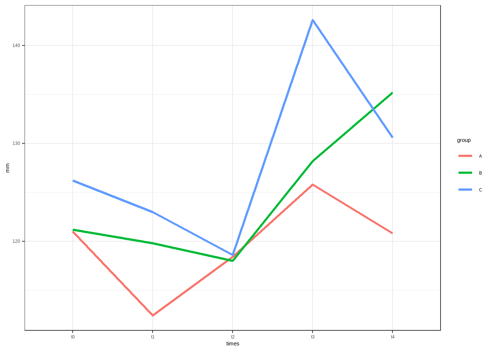

data12_3b <- foreign::read.spss("datasets/表12-3重复测量ANOVA.sav",
to.data.frame = T, reencode = "utf-8")
str(data12_3b)
## 'data.frame': 8 obs. of 4 variables:
## $ t0 : num 5.32 5.32 5.94 5.49 5.71 6.27 5.88 5.32
## $ t45 : num 5.32 5.26 5.88 5.43 5.49 6.27 5.77 5.15
## $ t90 : num 4.98 4.93 5.43 5.32 5.43 5.66 5.43 5.04
## $ t135: num 4.65 4.7 5.04 5.04 4.93 5.26 4.93 4.48
## - attr(*, "variable.labels")= Named chr(0)
## ..- attr(*, "names")= chr(0)
## - attr(*, "codepage")= int 936
head(data12_3b)
## t0 t45 t90 t135
## 1 5.32 5.32 4.98 4.65
## 2 5.32 5.26 4.93 4.70
## 3 5.94 5.88 5.43 5.04
## 4 5.49 5.43 5.32 5.04
## 5 5.71 5.49 5.43 4.93
## 6 6.27 6.27 5.66 5.2617 重复测量方差分析
重复测量资料（repeated measurement data）最常见的情况是同一个受试对象前后测量2次，也成为前后测量设计。当前后测量设计的重复测量次数大约等于3次时，称重复测量设计或重复测量数据。
重复测量数据进行方差分析前需进行球对称检验，相关内容请参考R语言球对称检验
本次主要演示如何使用R语言的自带函数aov()函数进行重复测量设计的方差分析。
对于经典的car::Anova()或者更加现代化的afex实现重复测量方差分析，请看以下文章：
公众号医学和生信笔记后台回复方差分析即可获得方差分析合集。
17.1 单因素重复测量
孙振球《医学统计学》第4版表12-3的数据，这是一个只有1组的，而且是一个不符合球对称假设的数据。
先读取数据：8名受试者分别在4个时间点的血糖值。
先把数据变成长格式，并添加一个id列：
library(dplyr)
library(tidyr)
data12_3b_long <- data12_3b %>%
mutate(id=row_number(),
id=factor(id)) %>%
pivot_longer(cols = 1:4, names_to = "times",values_to = "bg") %>%
mutate(times=factor(times,levels = c("t0","t45","t90","t135")))
head(data12_3b_long)
## # A tibble: 6 × 3
## id times bg
## <fct> <fct> <dbl>
## 1 1 t0 5.32
## 2 1 t45 5.32
## 3 1 t90 4.98
## 4 1 t135 4.65
## 5 2 t0 5.32
## 6 2 t45 5.26进行重复测量方差分析：
summary(aov(bg~times+Error(id),data = data12_3b_long))
##
## Error: id
## Df Sum Sq Mean Sq F value Pr(>F)
## Residuals 7 2.532 0.3617
##
## Error: Within
## Df Sum Sq Mean Sq F value Pr(>F)
## times 3 2.9601 0.9867 79.14 1.3e-11 ***
## Residuals 21 0.2618 0.0125
## ---
## Signif. codes: 0 '***' 0.001 '**' 0.01 '*' 0.05 '.' 0.1 ' ' 1注意！这个数据是不符合球对称假设的，需要用GG法或者HF校正的结果，可参考R语言球对称检验。
17.2 两因素两水平
使用孙振球《医学统计学》第4版例12-1的数据，20名高血压患者随机分配到处理组和对照组：
data12_1 <- foreign::read.spss("datasets/12-1.sav", to.data.frame = T)
str(data12_1)
## 'data.frame': 20 obs. of 5 variables:
## $ n : num 1 2 3 4 5 6 7 8 9 10 ...
## $ x1 : num 130 124 136 128 122 118 116 138 126 124 ...
## $ x2 : num 114 110 126 116 102 100 98 122 108 106 ...
## $ group: Factor w/ 2 levels "处理组","对照组": 1 1 1 1 1 1 1 1 1 1 ...
## $ d : num 16 14 10 12 20 18 18 16 18 18 ...
## - attr(*, "variable.labels")= Named chr [1:5] "编号" "治疗前血压" "治疗后血压" "组别" ...
## ..- attr(*, "names")= chr [1:5] "n" "x1" "x2" "group" ...
## - attr(*, "codepage")= int 936
head(data12_1)
## n x1 x2 group d
## 1 1 130 114 处理组 16
## 2 2 124 110 处理组 14
## 3 3 136 126 处理组 10
## 4 4 128 116 处理组 12
## 5 5 122 102 处理组 20
## 6 6 118 100 处理组 18数据一共5列（第5列是自己算出来的，其实原始数据只有4列），第1列是编号，第2列是治疗前血压，第3例是治疗后血压，第4列是分组，第5列是血压前后差值。
先变成长数据：
suppressMessages(library(tidyverse))
# 变成长数据
data12_1_long <-
data12_1[,1:4] %>%
pivot_longer(cols = 2:3,names_to = "time",values_to = "hp") %>%
mutate_if(is.character, as.factor)
data12_1_long$n <- factor(data12_1_long$n)
str(data12_1_long)
## tibble [40 × 4] (S3: tbl_df/tbl/data.frame)
## $ n : Factor w/ 20 levels "1","2","3","4",..: 1 1 2 2 3 3 4 4 5 5 ...
## $ group: Factor w/ 2 levels "处理组","对照组": 1 1 1 1 1 1 1 1 1 1 ...
## $ time : Factor w/ 2 levels "x1","x2": 1 2 1 2 1 2 1 2 1 2 ...
## $ hp : num [1:40] 130 114 124 110 136 126 128 116 122 102 ...
head(data12_1_long)
## # A tibble: 6 × 4
## n group time hp
## <fct> <fct> <fct> <dbl>
## 1 1 处理组 x1 130
## 2 1 处理组 x2 114
## 3 2 处理组 x1 124
## 4 2 处理组 x2 110
## 5 3 处理组 x1 136
## 6 3 处理组 x2 126hp是因变量，time是测量时间（治疗前和治疗后各测量一次），group是分组因素（两种治疗方法），n是受试者编号。
沿用析因试验各因素各水平全面分组的概念，将重复测量设计的干预因素作为A因素，共两个水平，1水平为“对照”，2水平为“处理”；前后两次测量时间作为B因素，共两个水平，1水平为“第1次测量时间”，2水平为“第2次测量时间”。根据此法进行方差分解结果如下：
# 按照析因设计的思路进行方差分解
summary(aov(hp ~ time * group,data = data12_1_long))
## Df Sum Sq Mean Sq F value Pr(>F)
## time 1 1020.1 1020.1 13.862 0.00067 ***
## group 1 202.5 202.5 2.752 0.10584
## time:group 1 348.1 348.1 4.730 0.03628 *
## Residuals 36 2649.2 73.6
## ---
## Signif. codes: 0 '***' 0.001 '**' 0.01 '*' 0.05 '.' 0.1 ' ' 1此结果的离均差平方和（Sum Sq）与书中完全一致。
然后是按照例12-2的重复测量方差分析的思路进行方差分解，如下：
# time和group是有交叉的，每个受试者（n）只和time有交叉，和group没有交叉
f1 <- aov(hp ~ time * group + Error(n/time), data = data12_1_long)
summary(f1)
##
## Error: n
## Df Sum Sq Mean Sq F value Pr(>F)
## group 1 202.5 202.5 1.574 0.226
## Residuals 18 2315.4 128.6
##
## Error: n:time
## Df Sum Sq Mean Sq F value Pr(>F)
## time 1 1020.1 1020.1 55.01 7.08e-07 ***
## time:group 1 348.1 348.1 18.77 0.000401 ***
## Residuals 18 333.8 18.5
## ---
## Signif. codes: 0 '***' 0.001 '**' 0.01 '*' 0.05 '.' 0.1 ' ' 1结果输出了两张表，和书里也是一样的(对应书中的表12-12和表12-13)。
- 第一个是处理组与对照组比较的方差分析表
- 第二个是测量前后比较与交互作用的方差分析表
结论：
- 由第2个方差分析表知：治疗前后舒张压的主效应有差别（P<0.01）。
- 由第1个方差分析表知：不考虑测量时间，处理组与对照组舒张压的主效应未见差别（P>0.05）。
- 由第2个方差分析表知：测量前后与处理存在交互作用（P<0.01），即处理组和对照组治疗前后的舒张压的变化幅度不同。
主效应计算方法如下：
suppressMessages(library(tidyverse))
data12_1_long %>%
dplyr::group_by(group,time) %>%
summarise(mean_hp=mean(hp))
## # A tibble: 4 × 3
## # Groups: group [2]
## group time mean_hp
## <fct> <fct> <dbl>
## 1 处理组 x1 126.
## 2 处理组 x2 110.
## 3 对照组 x1 125.
## 4 对照组 x2 121.
# 治疗前后舒张压主效应
before_hp <- mean(c(126.2,124.8))
after_hp <- mean(c(110.2,120.6))
a <- after_hp-before_hp
# 处理组合对照组主效应
treat_hp <- mean(c(126.2,110.2))
control_hp <- mean(c(124.8,120.6))
b <- treat_hp-control_hp
cat("治疗前平均舒张压为：",before_hp,"\n")
## 治疗前平均舒张压为： 125.5
cat("治疗后平均舒张压为：",after_hp,"\n")
## 治疗后平均舒张压为： 115.4
cat("治疗前后舒张压平均效应的估计值为：",a,"\n")
## 治疗前后舒张压平均效应的估计值为： -10.1
cat("处理组平均舒张压为：",treat_hp,"\n")
## 处理组平均舒张压为： 118.2
cat("对照组平均舒张压为：",control_hp,"\n")
## 对照组平均舒张压为： 122.7
cat("处理组和对照组舒张压主效应估计值为：",b,"\n")
## 处理组和对照组舒张压主效应估计值为： -4.5用图形方式展示重复测量的结果：
with(data12_1_long,
interaction.plot(time, group, hp, type = "b", col = c("red","blue"),
pch = c(12,16), main = "两因素两水平重复测量方差分析"))
或者用箱线图展示结果：
boxplot(hp ~ group*time, data = data12_1_long, col = c("gold","green"),
main = "两因素两水平重复测量方差分析")
17.3 两因素多水平
使用孙振球《医学统计学》第4版例12-3的数据。
将手术要求基本相同的15名患者随机分3组，在手术过程中分别采用A、B、C三种麻醉诱导方法，在T0（诱导前）、T1、T2、T3、T4五个时相测量患者的收缩压。试进行方差分析。
data12_3 <- foreign::read.spss("datasets/例12-03.sav",to.data.frame = T,
reencode = "gbk"
)
str(data12_3)
## 'data.frame': 15 obs. of 7 variables:
## $ No : num 1 2 3 4 5 6 7 8 9 10 ...
## $ group: Factor w/ 3 levels "A","B","C": 1 1 1 1 1 2 2 2 2 2 ...
## $ t0 : num 120 118 119 121 127 121 122 128 117 118 ...
## $ t1 : num 108 109 112 112 121 120 121 129 115 114 ...
## $ t2 : num 112 115 119 119 127 118 119 126 111 116 ...
## $ t3 : num 120 126 124 126 133 131 129 135 123 123 ...
## $ t4 : num 117 123 118 120 126 137 133 142 131 133 ...
## - attr(*, "variable.labels")= Named chr [1:7] "序号" "组别" "" "" ...
## ..- attr(*, "names")= chr [1:7] "No" "group" "t0" "t1" ...
head(data12_3)
## No group t0 t1 t2 t3 t4
## 1 1 A 120 108 112 120 117
## 2 2 A 118 109 115 126 123
## 3 3 A 119 112 119 124 118
## 4 4 A 121 112 119 126 120
## 5 5 A 127 121 127 133 126
## 6 6 B 121 120 118 131 137数据一共7列，第1列是患者编号，第2列是诱导方法（3种），第3-7列是5个时间点的血压。
首先转换数据格式：
suppressMessages(library(tidyverse))
# 变为长数据
data12_3_long <- data12_3 %>%
pivot_longer(cols = 3:7, names_to = "times", values_to = "hp")
data12_3_long$No <- factor(data12_3_long$No)
data12_3_long$times <- factor(data12_3_long$times)
str(data12_3_long)
## tibble [75 × 4] (S3: tbl_df/tbl/data.frame)
## $ No : Factor w/ 15 levels "1","2","3","4",..: 1 1 1 1 1 2 2 2 2 2 ...
## $ group: Factor w/ 3 levels "A","B","C": 1 1 1 1 1 1 1 1 1 1 ...
## $ times: Factor w/ 5 levels "t0","t1","t2",..: 1 2 3 4 5 1 2 3 4 5 ...
## $ hp : num [1:75] 120 108 112 120 117 118 109 115 126 123 ...进行方差分析（和两因素两水平没有任何区别）：
f2 <- aov(hp ~ times * group + Error(No/times), data = data12_3_long)
summary(f2)
##
## Error: No
## Df Sum Sq Mean Sq F value Pr(>F)
## group 2 912.2 456.1 5.783 0.0174 *
## Residuals 12 946.5 78.9
## ---
## Signif. codes: 0 '***' 0.001 '**' 0.01 '*' 0.05 '.' 0.1 ' ' 1
##
## Error: No:times
## Df Sum Sq Mean Sq F value Pr(>F)
## times 4 2336.5 584.1 106.6 < 2e-16 ***
## times:group 8 837.6 104.7 19.1 1.62e-12 ***
## Residuals 48 263.1 5.5
## ---
## Signif. codes: 0 '***' 0.001 '**' 0.01 '*' 0.05 '.' 0.1 ' ' 1输出结果是两张表格（对应表12-18和表12-19），第1个是不同诱导方法患者血压比较的方差分析表，第2个是麻醉诱导时相及其与诱导方法交互作用的方差分析表。
结论：
- 不同麻醉诱导方法存在组间差别（F=5.783，P<0.05），
- 患者的收缩压在不同的诱导方法下，不同诱导时相变化的趋势不同（F=19.11,p<0.01），其中A组不同诱导时相收缩压相对稳定（各组收缩压如下）。
# 各组收缩压
data12_3_long %>%
dplyr::group_by(group,times) %>%
summarise(mean_hp=mean(hp))
## # A tibble: 15 × 3
## # Groups: group [3]
## group times mean_hp
## <fct> <fct> <dbl>
## 1 A t0 121
## 2 A t1 112.
## 3 A t2 118.
## 4 A t3 126.
## 5 A t4 121.
## 6 B t0 121.
## 7 B t1 120.
## 8 B t2 118
## 9 B t3 128.
## 10 B t4 135.
## 11 C t0 126.
## 12 C t1 123
## 13 C t2 119.
## 14 C t3 143.
## 15 C t4 131.用图形方式展示重复测量数据结构：
with(data12_3_long,
interaction.plot(times, group, hp, type = "b",
col = c("red","blue","green"),
pch = c(12,16,20),
main = "两因素多水平重复测量方差分析"))
或者用箱线图展示结果：
boxplot(hp ~ group*times, data = data12_3_long,
col = c("gold","green","black"),
main = "两因素多水平重复测量方差分析")
17.4 多重比较
继续使用孙振球《医学统计学》第4版例12-3的数据演示。画图展示：
library(ggplot2)
library(dplyr)
data12_3_long %>%
group_by(times,group) %>%
summarise(mm=mean(hp)) %>%
ungroup() %>%
ggplot(aes(times,mm))+
geom_line(aes(group=group,color=group),linewidth=1.2)+
theme_bw()
接下来是重复测量数据的多重比较，课本中分成了3个方面。
17.4.1 组间差别多重比较
首先也计算下各组的均值，和书里对比下（一样的）：
data12_3_long %>%
group_by(group) %>%
summarise(mm=mean(hp))
## # A tibble: 3 × 2
## group mm
## <fct> <dbl>
## 1 A 120.
## 2 B 124.
## 3 C 128.LSD/SNK/Tukey/Dunnett/Bonferroni等方法都可以，和多个均数比较的多重检验一样。
library(PMCMRplus)
summary(lsdTest(hp ~ group, data = data12_3_long))
## t value Pr(>|t|)
## B - A == 0 2.175 0.0329218 *
## C - A == 0 3.860 0.0002446 ***
## C - B == 0 1.686 0.0962097 .P值和书中不太一样，但是结论是一样的，A组和B组之间、A组和C组之间有差别，B组和C组之间没有差别。
17.4.2 时间趋势比较
重复测量方差分析可以采取正交多项式来探索时间变化趋势，具体的内涵解读可以参考冯国双老师的这篇文章：重复测量数据探索时间变化趋势
课本上说的太难理解了，我这里简单介绍下什么是时间趋势比较以及为啥要用正交多项式。
现在我们要探索每个组内，血压变化的趋势，是线性的？还是U型的或者倒U型的？还是S型的或者倒S型的？还是波浪线型的？
中学时学过，1次函数（y=ax+b）的图像就是一条直线，2次函数（y=ax2+bx+c）是抛物线（U型或者倒U型），3次函数（y=ax3+bx2+cx+d）是S型或者倒S型……
统计学里的多项式就简单理解成多次函数就行了，比如4次多项式，就是最高次项为4次的函数。
只不过在统计分析中，我们不是直接拟合y=ax4+…，而是用一种叫“正交多项式（orthogonal polynomial）”的技巧，把这4种趋势（线性、二次、三次、四次）拆开成4个独立的部分，分别检验：
- 血压变化中，有没有直线成分？（线性）
- 有没有抛物线成分？（二次）
- 有没有S形成分？（三次）
- 有没有更复杂波动？（四次）
翻译成统计语言就是以下4个假设：
- H0₁：线性趋势系数 = 0
- H0₂：二次趋势系数 = 0
- H0₃：三次趋势系数 = 0
- H0₄：四次趋势系数 = 0
如果其中某一项显著（比如线性项p<0.05），就说明该组的收缩压随时间存在显著的线性变化趋势。
在R里面进行时间变化趋势探索略显复杂，需要对时间变量（这里是times）进行正交多项式转换，我们这里有5个时间点，所以是1次方到4次方：
# 首先要明确，分析时要对times这个变量进行正交多项式变换
# 你可以像下面这样做
contrasts(data12_3_long$times) <- contr.poly(5)
contrasts(data12_3_long$times)
## .L .Q .C ^4
## t0 -6.324555e-01 0.5345225 -3.162278e-01 0.1195229
## t1 -3.162278e-01 -0.2672612 6.324555e-01 -0.4780914
## t2 -3.510833e-17 -0.5345225 1.755417e-16 0.7171372
## t3 3.162278e-01 -0.2672612 -6.324555e-01 -0.4780914
## t4 6.324555e-01 0.5345225 3.162278e-01 0.1195229
# 或者也可以把times变成`有序因子`，但这会影响后续其他分析，
# data12_3_long$times <- factor(data12_3_long$times,ordered = T)
# 所以我选第一种方法下面进行方差分析（这个结果就和书里不太一样了），然后借助split查看多项式的结果：
# A组
f1 <- aov(hp ~ times+Error(No),
data = data12_3_long[data12_3_long$group=="A",])
# 分别看不同次方的结果
summary(f1,
split=list(times=list(linear=1,quadratic=2,cubic=3,biquadrate=4)))
##
## Error: No
## Df Sum Sq Mean Sq F value Pr(>F)
## Residuals 4 364.2 91.06
##
## Error: Within
## Df Sum Sq Mean Sq F value Pr(>F)
## times 4 475.4 118.9 30.793 2.47e-07 ***
## times: linear 1 84.5 84.5 21.891 0.000252 ***
## times: quadratic 1 26.4 26.4 6.843 0.018725 *
## times: cubic 1 364.5 364.5 94.430 4.09e-08 ***
## times: biquadrate 1 0.0 0.0 0.007 0.935962
## Residuals 16 61.8 3.9
## ---
## Signif. codes: 0 '***' 0.001 '**' 0.01 '*' 0.05 '.' 0.1 ' ' 1我们只要关注winthin的结果即可，其中线性项、二次项、三次项都显著，那选谁呢？选高的，也就是选3次项，理论上3次项肯定比2次和1次拟合的更准确。
# B组
f2 <- aov(hp ~ times+Error(No),
data = data12_3_long[data12_3_long$group=="B",])
summary(f2,
split=list(times=list(linear=1,quadratic=2,cubic=3,biquadrate=4)))
##
## Error: No
## Df Sum Sq Mean Sq F value Pr(>F)
## Residuals 4 484.2 121.1
##
## Error: Within
## Df Sum Sq Mean Sq F value Pr(>F)
## times 4 1017.0 254.3 110.069 1.99e-11 ***
## times: linear 1 662.5 662.5 286.788 1.22e-11 ***
## times: quadratic 1 296.2 296.2 128.237 4.74e-09 ***
## times: cubic 1 3.9 3.9 1.697 0.211123
## times: biquadrate 1 54.4 54.4 23.555 0.000176 ***
## Residuals 16 37.0 2.3
## ---
## Signif. codes: 0 '***' 0.001 '**' 0.01 '*' 0.05 '.' 0.1 ' ' 1# C组
f3 <- aov(hp ~ times+Error(No),
data = data12_3_long[data12_3_long$group=="C",])
summary(f3,
split=list(times=list(linear=1,quadratic=2,cubic=3,biquadrate=4)))
##
## Error: No
## Df Sum Sq Mean Sq F value Pr(>F)
## Residuals 4 98 24.5
##
## Error: Within
## Df Sum Sq Mean Sq F value Pr(>F)
## times 4 1681.6 420.4 40.915 3.28e-08 ***
## times: linear 1 403.3 403.3 39.249 1.13e-05 ***
## times: quadratic 1 41.7 41.7 4.054 0.0612 .
## times: cubic 1 605.5 605.5 58.931 9.43e-07 ***
## times: biquadrate 1 631.1 631.1 61.425 7.23e-07 ***
## Residuals 16 164.4 10.3
## ---
## Signif. codes: 0 '***' 0.001 '**' 0.01 '*' 0.05 '.' 0.1 ' ' 1以上结果中，离均差平方和、自由度、均方都是和课本一样的，但是F值和P值相差很多。关于这方面的资料较少，如果有大神知道原因，欢迎赐教！
17.4.3 时间点多重比较
事前检验课本采用配对t检验，全都和t0的数据进行比较。
事前检验使用rstatix包解决:
suppressMessages(library(rstatix))
## Warning: package 'rstatix' was built under R version 4.5.2
data12_3_long %>%
group_by(group)%>%
t_test(hp ~ times, ref.group = "t0",paired = T)
## # A tibble: 12 × 11
## group .y. group1 group2 n1 n2 statistic df p p.adj
## * <fct> <chr> <chr> <chr> <int> <int> <dbl> <dbl> <dbl> <dbl>
## 1 A hp t0 t1 5 5 8.35 4 0.001 0.004
## 2 A hp t0 t2 5 5 1.77 4 0.152 0.304
## 3 A hp t0 t3 5 5 -3.64 4 0.022 0.066
## 4 A hp t0 t4 5 5 0.147 4 0.89 0.89
## 5 B hp t0 t1 5 5 1.72 4 0.16 0.16
## 6 B hp t0 t2 5 5 4.35 4 0.012 0.024
## 7 B hp t0 t3 5 5 -8.37 4 0.001 0.003
## 8 B hp t0 t4 5 5 -16.7 4 0.0000747 0.000299
## 9 C hp t0 t1 5 5 1.44 4 0.223 0.292
## 10 C hp t0 t2 5 5 4.75 4 0.009 0.028
## 11 C hp t0 t3 5 5 -5.12 4 0.007 0.028
## 12 C hp t0 t4 5 5 -1.80 4 0.146 0.292
## # ℹ 1 more variable: p.adj.signif <chr>直接给出3组的结果，和书中一模一样。